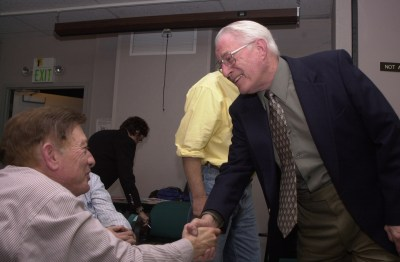

|  |
Help Here you'll find help on how to use our machines, how to get help and support, how to create web-pages and a local FAQ amongst other related items. Information about the support that we provide to our members can also be found here. Members Our members, those 121 currently online and some information about the members of the board and our system administrators. Projects Some of our projects, such as our webmail project PUSS, our associations history and the temperature measurement project MATTITH. Technical information Here you find information of installed programs, our hardware. |